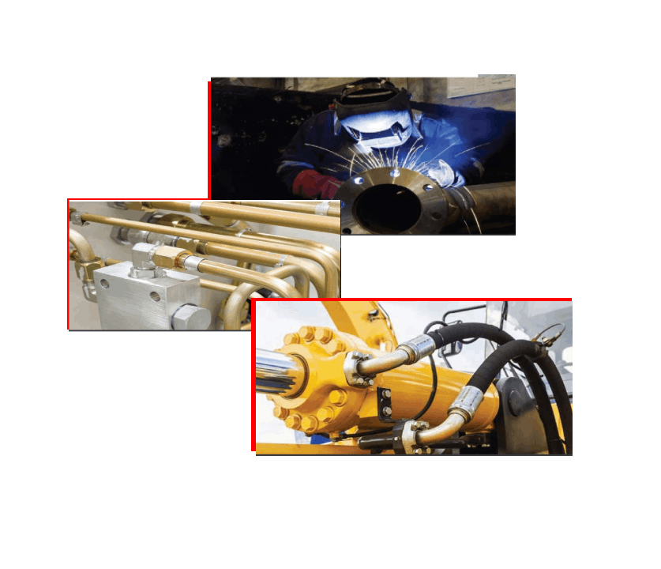

TECHMARK CORPORATION
Home
Contact Us
Products
About Us
ABOUT TECHMARK CORPORATION

TECHMARK CORPORATION
is central India's leading engineering company with interests in manufacturing of Hose assemblies,end fittings for
industrial & earth moving eqiupment ,turned component & trading of various industrial consumables like rubber sheets,P.V.C water stopers ,
welding cables,speciality greases & aerosol maintanence products.
A strong customer-focussed approach and constant quest for top-class quality have enabled TECHMARK to attain and sustain leadership
position over One decade. TECHMARK enjoys a premier brand image in Central India. The company's businesses are supported by a wide
marketing and distribution network, and have established a reputation for strong customer support.
INFRASTRUTURE
We have a strong infrastructure that lends strength to every section of our business. We boast of latest machinery at our disposal.
We have sophisticated machines to achieve high quality standards. Thanks to the periodic training that helps our personnel to be well
versed with the latest developments in technology related to production. Quality has always commanded the utmost importance in our
scheme of things. Our quality control system constitutes of stage wise inspection, development, random testing as well as sampling.
These are followed routinely to ensure high quality products without any flaw. Near zero or no rejection is the objective of our
inbuilt quality control system. We take special efforts to avoid any Leakage & Pressure drop due to our products.